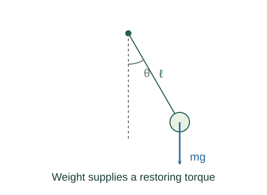

Derive the small-angle pendulum period
A pendulum is approximately harmonic only at small angles. The approximation replaces sin θ by θ, turning its exact nonlinear equation into the spring-like harmonic equation.
What the symbols mean
ℓ: distance from pivot to point mass; θ: angle from the downward vertical in radians; g: gravitational acceleration magnitude.
When this applies
Point bob, massless inextensible string or rod, fixed pivot, negligible friction and air drag. The period formula requires small angular amplitude.

Find the restoring torque
Tension passes through the pivot and contributes no torque about it. Weight has perpendicular lever arm ℓ sin θ and restores the bob toward the bottom.
Use rotational dynamics
The bob’s moment of inertia is mℓ². Substitute in τ = Iα and cancel the mass.
Make the small-angle approximation
For |θ| much smaller than one radian, sin θ ≈ θ. This is the sole step that makes the equation harmonic and its period approximately amplitude-independent.
Go deeper at this stepWhy does this equation give a sinusoid?Derive simple harmonic motion from a springRead off the angular frequency
Compare the coefficient with −ω²θ. The oscillation period is then 2π/ω.
Where each equation comes from
Derived equations link to an argument below. Definitions, physical postulates and constitutive models are identified as the inputs of that argument.
Derivation of the main resultDerived result
Conditions: Point bob, massless inextensible string or rod, fixed pivot, negligible friction and air drag. The period formula requires small angular amplitude.
- Find the restoring torque. Tension passes through the pivot and contributes no torque about it. Weight has perpendicular lever arm ℓ sin θ and restores the bob toward the bottom. Explain the equation used in step 1 ↗
- Use rotational dynamics. The bob’s moment of inertia is mℓ². Substitute in τ = Iα and cancel the mass. Explain the equation used in step 2 ↗
- Make the small-angle approximation. For |θ| much smaller than one radian, sin θ ≈ θ. This is the sole step that makes the equation harmonic and its period approximately amplitude-independent. Explain the equation used in step 3 ↗ Why does this equation give a sinusoid? ↗
- Read off the angular frequency. Compare the coefficient with −ω²θ. The oscillation period is then 2π/ω. Explain the equation used in step 4 ↗
Equation in step 1Derived result
What is being shown: Find the restoring torque
Tension passes through the pivot and contributes no torque about it. Weight has perpendicular lever arm ℓ sin θ and restores the bob toward the bottom.
Starting conditions and inputs: Point bob, massless inextensible string or rod, fixed pivot, negligible friction and air drag. The period formula requires small angular amplitude.
Equation in step 2Derived result
What is being shown: Use rotational dynamics
The bob’s moment of inertia is mℓ². Substitute in τ = Iα and cancel the mass.
Earlier results used in this argument:
- τ = −mgℓ sin θ (Derived result)
Equation in step 3Derived result
What is being shown: Make the small-angle approximation
For |θ| much smaller than one radian, sin θ ≈ θ. This is the sole step that makes the equation harmonic and its period approximately amplitude-independent.
Earlier results used in this argument:
- τ = −mgℓ sin θ (Derived result)
- mℓ² d²θ/dt² = −mgℓ sin θ (Derived result)
Equation in step 4Derived result
What is being shown: Read off the angular frequency
Compare the coefficient with −ω²θ. The oscillation period is then 2π/ω.
Earlier results used in this argument:
- τ = −mgℓ sin θ (Derived result)
- mℓ² d²θ/dt² = −mgℓ sin θ (Derived result)
- d²θ/dt² ≈ −(g/ℓ)θ (Derived result)
A worked example
A 1.0 m pendulum has a small-angle period about 2.01 s at g = 9.81 m/s². At a 5° amplitude, θmax ≈ 0.087 rad, so the approximation is good.
Derivation behind this calculation ↗A point to keep straight
Use radians in sin θ ≈ θ. Large-amplitude pendulums have longer periods than this approximation predicts.
Check the assumptions and derivation ↗